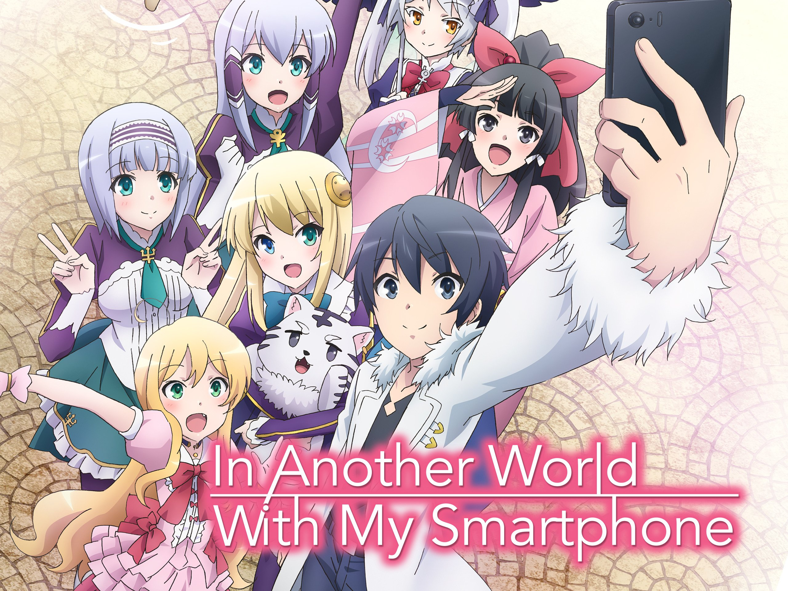

Lonely thirty-seven-year-old Mikami Satoru is stuck in a dead-end job, unhappy with his mundane life, but after dying at the hands of a robber, he awakens to a fresh start in a fantasy realm...as a slime monster.

Misato Kurihara, a genius girl who couldn't make any friends due to her exceptional abilities, is killed after being run over while protecting a young girl. Offered the chance to be reborn into a fantasy world, Misato asks that she simply be reincarnated with average abilities.
Plot. Fifteen-year-old Touya Mochizuki is accidentally killed by God. As an apology, God allows him to be resurrected, but since he cannot send him back to his old world, he instead reincarnates him into a fantasy world along with a single special request.
